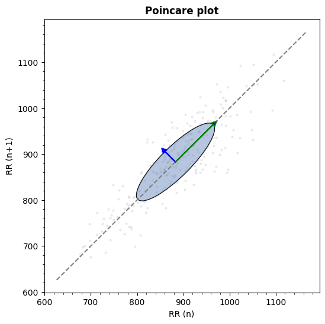

systole.plots.plot_poincare#
- systole.plots.plot_poincare(rr: ndarray | list, input_type: str = 'peaks', figsize: int | List[int] | Tuple[int, int] | None = None, backend: str = 'matplotlib', ax: Axes | None = None) figure | Axes[source]#
Poincare plot.
- Parameters:
- rr
Boolean vector of peaks detection or RR intervals.
- input_type
The type of input vector. Default is “peaks” (a boolean vector where 1 represents the occurrence of R waves or systolic peaks). Can also be “rr_s” or “rr_ms” for vectors of RR intervals, or interbeat intervals (IBI), expressed in seconds or milliseconds (respectively).
- figsize
Figure size. Default is (13, 5).
- backend
Select plotting backend {“matplotlib”, “bokeh”}. Defaults to “matplotlib”.
- ax
Where to draw the plot. Default is None (create a new figure).
- Returns:
- plot
The matplotlib axes, or the boken figure containing the plot.
See also
Examples
Visualizing poincare plot from RR time series using Matplotlib as plotting backend.
from systole import import_rr from systole.plots import plot_poincare # Import PPG recording as numpy array rr = import_rr().rr.to_numpy() plot_poincare(rr, input_type="rr_ms")
<Axes: title={'center': 'Poincare plot'}, xlabel='RR (n)', ylabel='RR (n+1)'>Using Bokeh backend